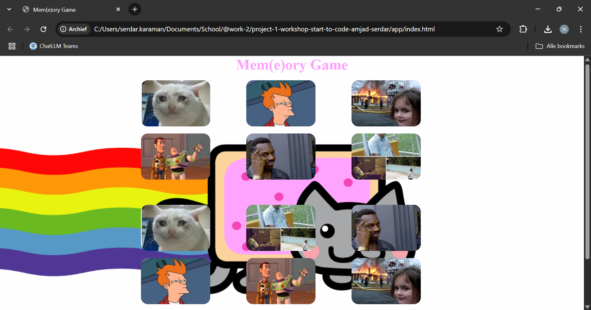
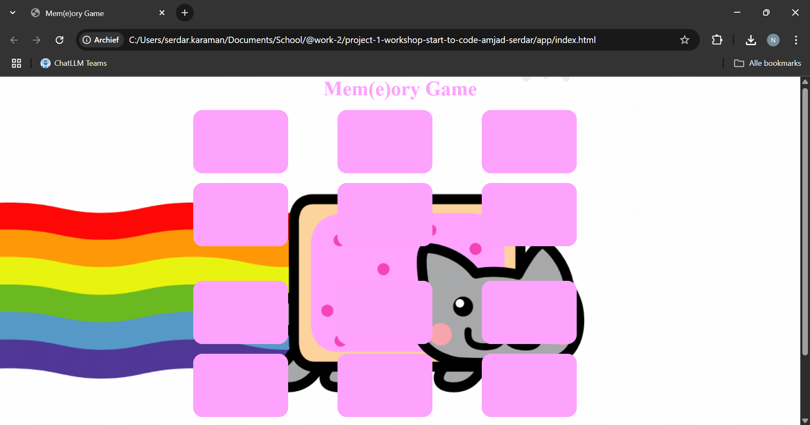

Wat je nodig hebt
- Visual Studio Code (of een andere editor)
- Live Server-extensie
- Een moderne browser
- Een map met meme-afbeeldingen
STAP 1 - Projectstructuur opzetten
Maak een map memory-game aan met deze structuur:
memory-game/
├── css/
│ └── main.css
├── img/
│ └── (meme-afbeeldingen)
├── scripts/
│ └── main.js
└── index.htmlindex.html- HTML-skeletmain.css- stylingmain.js- spellogicaimg/- je memes
STAP 2 - Live Server starten
- Open het project in VS Code.
-
Rechtermuis op
index.html→ Open with Live Server. - De pagina ververst automatisch bij elke wijziging.
STAP 3 - HTML-structuur
Kopieer onderstaande markup in index.html:
index.html
Waarom? Het grid bevat twee containers met elk zes
kaarten, .counter toont het aantal zetten en de knop
linkt naar een easter egg.
De afbeeldingen zijn nog niet
zichtbaar, omdat ze pas in de JavaScript-code worden geladen.
Je
zou nu de pagina moeten zien zonder enige opmaak, zoals in de
screenshot hieronder.
STAP 4 - Styling (CSS)
Plak onderstaande CSS in css/main.css. De belangrijkste
regels staan ook verderop in dit document.
css/main.css
Waarom? De CSS zorgt voor een leuke achtergrond, een
grid-layout en een hover-effect op de kaarten. De .btn is
een link naar een easter egg.
Je zou nu de pagina moeten zien
met opmaak, zoals in de screenshot hieronder.
De afbeeldingen
zijn zichtbaar omdat de JavaScript-code nog niet is geladen.

STAP 5 - JavaScript-logica
Voeg de volledige JS-code toe in scripts/main.js. De
kern- functies zijn flipCard(),
checkForMatch() en updateMoveCounter().
scripts/main.js
Zodra de webpagina volledig is geladen, wijs ik de kaarten aan en maak ik notitieblokjes om bij te houden: “welke kaart is omgedraaid, hoeveel zetten heb je al gedaan, hoeveel paren zijn gevonden…”.
Ik verzamel zes grappige plaatjes, maak er een dubbele set van (twaalf stuks) en schud alles door elkaar. Tegelijk teken ik een effen roze achterkant voor iedere kaart.
Elke digitale kaart krijgt stiekem één van die plaatjes toegewezen, maar toont voorlopig alleen de roze rug. Ook plak ik op elke kaart een onzichtbaar “klik hier”-briefje, zodat hij reageert als je erop klikt.
Als je op een kaart klikt: 1) hij draait om en laat zijn plaatje zien; 2) bij de tweede klik tel ik één zet op; 3) daarna roep ik de controle-scheidsrechter (volgende stap).
Kijken of de 2 open kaarten gelijk zijn. • Gelijk → blijven open • Niet gelijk → na 1 s weer dicht. Wanneer alle 6 paren open liggen: pop-up “Gewonnen!” + knop “Speel opnieuw”.
Druk je op “Speel opnieuw”, dan wis ik de score, schud ik alle plaatjes opnieuw, steek ik ze onder de kaarten en zet alles weer dicht. Het spel is als nieuw.
Waarom? De JavaScript-code zorgt voor de spellogica,
zoals het omdraaien van kaarten, het bijhouden van de score en het
resetten van het spel.
Je zou nu de pagina moeten zien met
opmaak, zoals in de screenshot hieronder.
De afbeeldingen zijn
verborgen omdat de JavaScript-code is geladen via het script onderaan
de html pagina, net voor de sluitende body tag.

STAP 6 - Testen & spelen
- Zorg dat alle afbeeldingen in
img/staan. - Herstart zo nodig Live Server.
- Speel het spel en verbeter je high-score!
Bonus: uitbreiden
- Vervang memes door eigen favorieten.
- Voeg thema-wissels of geluidseffecten toe.
Gefeliciteerd 🎉
Je Mem(e)ory Game is klaar. Veel plezier met spelen!
Play the game!!
click me!